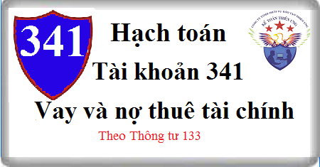

Hướng dẫn cách hạch toán Tài khoản 341 theo thông tư 133, cách hạch toán Vay và nợ thuê tài chính, hạch toán vay ngân hàng, cá nhân, vay chuyển thẳng cho người bán, vay để góp vốn đầu tư, vay để mua TSCĐ …
1. Nguyên tắc kế toán Tài khoản 341 - Vay và nợ thuê tài chính
a) Tài khoản này dùng để phản ánh các khoản tiền vay (bao gồm cả vay dưới hình thức phát hành trái phiếu), nợ thuê tài chính và tình hình thanh toán các khoản tiền vay, nợ thuê tài chính của doanh nghiệp.
b) Doanh nghiệp phải theo dõi chi tiết kỳ hạn phải trả của các khoản vay, nợ thuê tài chính. Các khoản có thời gian trả nợ hơn 12 tháng kể từ thời điểm lập Báo cáo tài chính, kế toán trình bày là vay và nợ thuê tài chính dài hạn. Các khoản đến hạn trả trong vòng 12 tháng tiếp theo kể từ thời điểm lập Báo cáo tài chính, kế toán trình bày là vay và nợ thuê tài chính ngắn hạn để có kế hoạch chi trả.
c) Khi doanh nghiệp đi vay dưới hình thức phát hành trái phiếu, có thể xảy ra 3 trường hợp:
- Phát hành trái phiếu ngang giá (giá phát hành bằng mệnh giá): Là phát hành trái phiếu với giá đúng bằng mệnh giá của trái phiếu.
- Phát hành trái phiếu có chiết khấu (giá phát hành nhỏ hơn mệnh giá): Là phát hành trái phiếu với giá nhỏ hơn mệnh giá của trái phiếu. Phần chênh lệch giữa giá phát hành trái phiếu nhỏ hơn mệnh giá của trái phiếu gọi là chiết khấu trái phiếu. Trường hợp này thường xảy ra khi lãi suất thị trường lớn hơn lãi suất danh nghĩa của trái phiếu phát hành.
- Phát hành trái phiếu có phụ trội (giá phát hành lớn hơn mệnh giá): Là phát hành trái phiếu với giá lớn hơn mệnh giá của trái phiếu. Phần chênh lệch giữa giá phát hành trái phiếu lớn hơn mệnh giá của trái phiếu gọi là phụ trội trái phiếu... Trường hợp này thường xảy ra khi lãi suất thị trường nhỏ hơn lãi suất danh nghĩa (lãi ghi trên trái phiếu) của trái phiếu phát hành.
Khi hạch toán trái phiếu phát hành, doanh nghiệp phải ghi nhận khoản chiết khấu hoặc phụ trội trái phiếu tại thời điểm phát hành và theo dõi chi tiết thời hạn phát hành trái phiếu, các nội dung có liên quan đến trái phiếu phát hành:
+ Mệnh giá trái phiếu;
+ Chiết khấu trái phiếu;
+ Phụ trội trái phiếu.
- Doanh nghiệp phải theo dõi chiết khấu và phụ trội cho từng loại trái phiếu phát hành và tình hình phân bổ từng khoản chiết khấu, phụ trội khi xác định chi phí đi vay tính vào chi phí tài chính hoặc vốn hóa theo từng kỳ, cụ thể:
+ Chiết khấu trái phiếu được phân bổ dần để tính vào chi phí đi vay từng kỳ trong suốt thời hạn của trái phiếu;
+ Phụ trội trái phiếu được phân bổ dần để giảm trừ chi phí đi vay từng kỳ trong suốt thời hạn của trái phiếu;
+ Trường hợp chi phí lãi vay của trái phiếu đủ điều kiện vốn hóa, các khoản lãi tiền vay và khoản phân bổ chiết khấu hoặc phụ trội được vốn hóa trong từng kỳ không được vượt quá số lãi vay thực tế phát sinh và số phân bổ chiết khấu hoặc phụ trội trong kỳ đó;
+ Khoản chiết khấu hoặc phụ trội được phân bổ trong suốt kỳ hạn của trái phiếu theo phương pháp đường thẳng.
- Trường hợp trả lãi khi đáo hạn trái phiếu thì định kỳ doanh nghiệp phải tính lãi trái phiếu phải trả từng kỳ để ghi nhận vào chi phí tài chính hoặc vốn hóa vào giá trị của tài sản dở dang.
- Khi lập báo cáo tài chính, trên Báo cáo tình hình tài chính trong phần nợ phải trả thì khoản trái phiếu phát hành được phản ánh trên cơ sở thuần (xác định bằng trị giá trái phiếu theo mệnh giá trừ (-) chiết khấu trái phiếu cộng (+) phụ trội trái phiếu).
d) Các chi phí đi vay liên quan trực tiếp đến khoản vay (ngoài lãi vay phải trả), như chi phí thẩm định, kiểm toán, lập hồ sơ vay vốn, chi phí phát hành trái phiếu... được hạch toán vào chi phí tài chính. Trường hợp các chi phí này phát sinh từ khoản vay riêng cho mục đích đầu tư, xây dựng hoặc sản xuất tài sản dở dang thì được vốn hóa.
đ) Đối với khoản nợ thuê tài chính, tổng số nợ thuê phản ánh vào bên Có của Tài khoản 341 là tổng số tiền phải trả được tính bằng giá trị hiện tại của khoản thanh toán tiền thuê tối thiểu hoặc giá trị hợp lý của tài sản thuê.
2. Kết cấu và nội dung Tài khoản 341 - Vay và nợ thuê tài chính
Bên Nợ:
- Số tiền đã trả nợ gốc của các khoản vay, nợ thuê tài chính;
- Số tiền gốc vay, nợ được giảm do được bên cho vay, chủ nợ chấp thuận;
- Số phân bổ phụ trội trái phiếu phát hành;
- Chênh lệch tỷ giá hối đoái do đánh giá lại số dư vay, nợ thuê tài chính là khoản mục tiền tệ có gốc ngoại tệ cuối kỳ (trường hợp tỷ giá ngoại tệ giảm so với tỷ giá ghi sổ kế toán).
Bên Có:
- Số tiền vay, nợ thuê tài chính phát sinh trong kỳ;
- Số phân bổ chiết khấu trái phiếu phát hành;
- Chênh lệch tỷ giá hối đoái do đánh giá lại số dư vay, nợ thuê tài chính là khoản mục tiền tệ có gốc ngoại tệ cuối kỳ (trường hợp tỷ giá ngoại tệ tăng so với tỷ giá ghi sổ kế toán).
Số dư bên Có: Số dư vay, nợ thuê tài chính chưa đến hạn trả.
Tài khoản 341 - Vay và nợ thuê tài chính có 2 tài khoản cấp 2:
Tài khoản 3411 - Các khoản đi vay: Tài khoản này phản ánh giá trị các khoản tiền đi vay, tình hình thanh toán các khoản tiền vay (kể cả đi vay dưới hình thức phát hành trái phiếu) của doanh nghiệp và tình hình phân bổ chiết khấu, phụ trội trái phiếu.
Tài khoản 3412 - Nợ thuê tài chính: Tài khoản này phản ánh giá trị khoản nợ thuê tài chính và tình hình thanh toán nợ thuê tài chính của doanh nghiệp.
3. Cách hạch toán vay và nợ thuê tài chính Tài khoản 341:
(a) Vay bằng tiền
- Trường hợp vay bằng đồng tiền ghi sổ kế toán (nhập về quỹ hoặc gửi vào Ngân hàng), ghi:
Nợ TK 111 Tiền mặt
Nợ TK 112 Tiền gửi Ngân hàng
Có TK 341 - Vay và nợ thuê tài chính
- Trường hợp vay bằng ngoại tệ phải quy đổi ra Đồng tiền ghi sổ kế toán theo tỷ giá giao dịch thực tế, ghi:
Nợ TK 111 - Tiền mặt (1112) (vay nhập quỹ)
Nợ TK 112 - Tiền gửi Ngân hàng (1122) (vay gửi vào ngân hàng)
Nợ TK 228 – Đầu tư góp vốn vào đơn vị khác (vay đầu tư, góp vốn vào đơn vị khác)
Nợ TK 331 - Phải trả cho người bán (vay thanh toán thẳng cho người bán)
Nợ TK 211 - Tài sản cố định (vay mua TSCĐ)
Nợ TK 133 - Thuế GTGT được khấu trừ (nếu có)
Có TK 341 - Vay và nợ thuê tài chính (3411).
- Chi phí đi vay liên quan trực tiếp đến khoản vay (ngoài lãi vay phải trả) như chi phí kiểm toán, lập hồ sơ thẩm định... ghi:
Nợ các Tài khoản 154, 241, 635
Có các TK 111, 112, 331.
b) Vay chyển thẳng cho người bán để mua sắm hàng tồn kho, TSCĐ, để thanh toán về đầu tư XDCB, nếu thuế GTGT đầu vào được khấu trừ, ghi:
Nợ các Tài khoản 152, 153, 156, 211, 241 (giá mua chưa có thuế GTGT)
Nợ TK 133 - Thuế GTGT được khấu trừ (1332)
Có TK 341 - Vay và nợ thuê tài chính (3411).
- Nếu thuế GTGT đầu vào không được khấu trừ, giá trị TSCĐ mua sắm, xây dựng được ghi nhận bao gồm cả thuế GTGT. Chi phí đi vay liên quan trực tiếp đến khoản vay (ngoài lãi vay phải trả) như chi phí kiểm toán, lập hồ sơ thẩm định kế toán tương tự bút toán ở mục a.
c) Vay thanh toán hoặc ứng vốn (trả trước) cho người bán, người nhận thầu về XDCB, để thanh toán các khoản chi phí, ghi:
Nợ các TK 331, 642, 811
Có TK 341 - Vay và thuê tài chính (3411).
d) Vay để đầu tư vào đơn vị khác, ghi:
Nợ các TK 228 - Đầu tư góp vốn vào đơn vị khác.
Có TK 341 - Vay và nợ thuê tài chính (3411).
đ) Trường hợp lãi vay phải trả được nhập gốc, ghi:
Nợ TK 635 - Chi phí tài chính
Nợ các TK 154, 241 (nếu lãi vay được vốn hóa)
Có TK 341 - Vay và nợ thuê tài chính (3411).
e) Khi trả nợ vay bằng tiền hoặc bằng tiền thu nợ của khách hàng, ghi:
Nợ TK 341 - Vay và nợ thuê tài chính (3411)
Có các TK 111, 112, 131.
g) Khi trả nợ vay bằng ngoại tệ:
- Trường hợp bên Có TK tiền và bên Nợ TK 341 áp dụng tỷ giá ghi sổ, ghi:
Nợ TK 341 - Vay và nợ thuê tài chính 3411 (theo tỷ giá ghi sổ bình quân gia quyền cho từng đối tượng)
Nợ TK 635 - Chi phí tài chính (lỗ tỷ giá)
Có các TK 111, 112 (theo tỷ giá ghi sổ bình quân gia quyền TK tiền)
Có TK 515 - Doanh thu hoạt động tài chính (lãi tỷ giá).
- Trường hợp bên Có TK tiền và bên Nợ TK 341 áp dụng tỷ giá giao dịch thực tế, ghi:
Nợ TK 341 - Vay và nợ thuê tài chính (3411)
Có các TK 111, 112
+ Ghi nhận chênh lệch tỷ giá: Việc ghi nhận chênh lệch tỷ giá hối đoái phát sinh trong kỳ được thực hiện đồng thời khi trả tiền nợ hoặc định kỳ tùy theo đặc điểm hoạt động kinh doanh và yêu cầu quản lý của DN:
(+) Nếu phát sinh lỗ chênh lệch tỷ giá, ghi:
Nợ TK 635 - Chi phí tài chính
Có các TK 1112, 1122, 3411
(+) Nếu phát sinh lãi chênh lệch tỷ gá, ghi:
Nợ các TK 1112, 1122, 3411
Có TK 515 – Doanh thu hoạt động tài chính.
h) Kế toán các nghiệp vụ liên quan đến hoạt động thuê tài chính: Thực hiện theo quy định của TK 2112 – TSCĐ thuê tài chính.
i) Khi lập Báo cáo tài chính, kế toán đánh giá lại số dư vay và nợ thuê tài chính là khoản mục tiền tệ có gốc ngoại tệ theo tỷ giá chuyển khoản trung bình cuối kỳ của ngân hàng thương mại nơi doanh nghiệp thường xuyên có giao dịch:
- Nếu phát sinh lỗ tỷ giá hối đoái, ghi:
Nợ TK 413 - Chênh lệch tỷ giá hối đoái
Có TK 341 - Vay và nợ thuê tài chính.
- Nếu phát sinh lãi tỷ giá hối đoái, ghi:
Nợ TK 341 - Vay và nợ thuê tài chính
Có TK 413 - Chênh lệch tỷ giá hối đoái.
-----------------------------------
Kế toán Diệu Tâm xin chúc bạn làm tốt công việc kế toán!
Kế toán Diệu Tâm xin chúc bạn làm tốt công việc kế toán!
